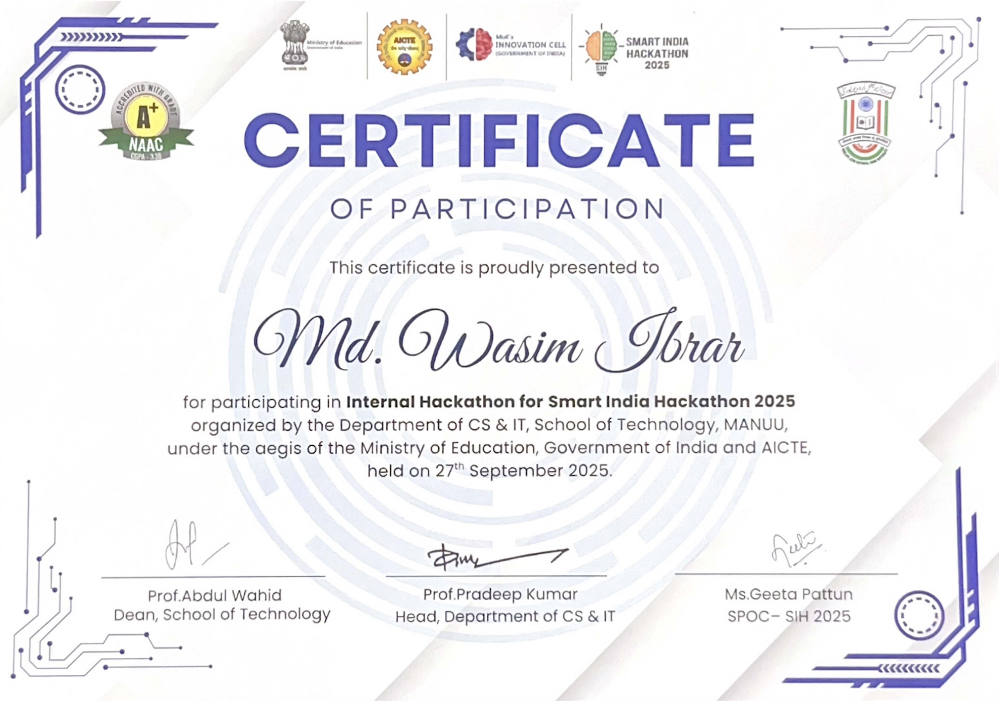

Digital Learning Platform for Rural School Students in Nabha
ID: SIH25020 | Theme: Smart Education | Organisation: Government of Punjab
Our team developed a digital learning platform aimed at empowering rural school students in Nabha by providing accessible, engaging, and interactive educational resources.
Team Members

Hedayatullah Noor
Lead

Md Wasim Ibrar
Frontend

Saif Khan
Mobile App

Md Hanzala
Backend

Mohammad Sahil Shaikh
Data Analysis
Bushra Parween
UX/UI
Certificate of Participation
Project Gallery


Detailed Description
This project was designed as part of the Smart India Hackathon under the Smart Education theme. Our objective was to build a Digital Learning Platform tailored for rural school students in Nabha. The platform integrates features such as:
- Interactive video lectures and quizzes for better engagement.
- Offline access for areas with low internet connectivity.
- Localized content in regional languages.
- Progress tracking for students and teachers.
The initiative, mentored by the Government of Punjab, highlights the importance of bridging the digital divide and ensuring every student has equal access to quality education. Our team collaborated effectively to ideate, design, and prototype a solution that can make a real impact on rural education.